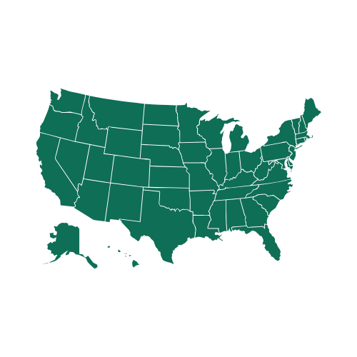

Indicadores dos relatórios
Gerar Relatório de Ciclo
Relatório — Ciclo Atual
Estatísticas da Semana
 Pico de Focos
31
Cerrado TO
Pico de Focos
31
Cerrado TO

Mais Alertas Cerrado MT 23 focos Umidade Média
15.2%
Nível baixo
Umidade Média
15.2%
Nível baixo